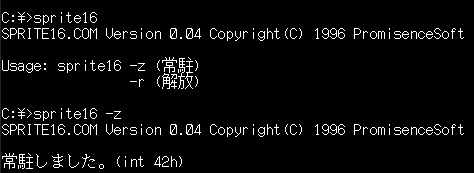
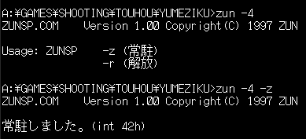
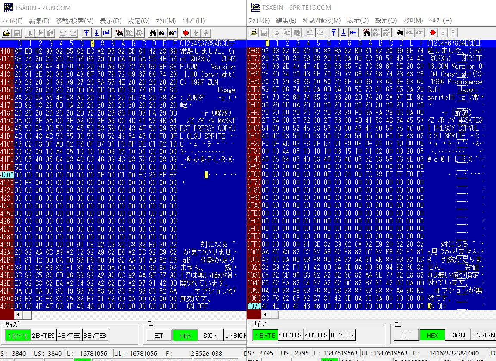
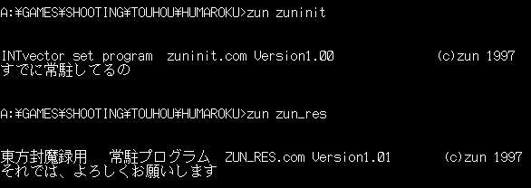
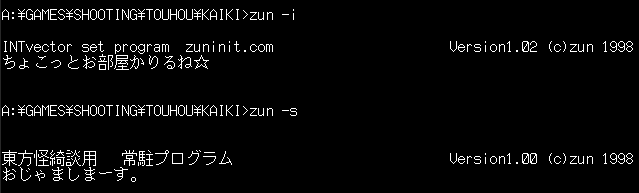
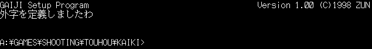
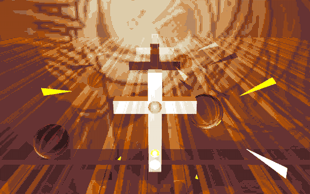

Considering that Ruw (and by extension ZUN) is willing to fight against preservation efforts of a set of long abandoned and discontinued games for a discontinued computer platform
with no re-release in sight, there's no better time to bring the legality of these games' existence to the public spotlight.
First, let's go over the most egregious and well documented case: ZUN stealing credit for PoDD's graphics engine.
There's a reason why the game looks noticeably lower res than the rest: It runs in 200-line mode, the only mode that SPRITE16 supports.
SPRITE16 is a software graphics engine written in 1996 by PromisenceSoft, which was used in their sample game Stormy Space.
So far the only other known game to use it is PoDD, but this is something that wasn't known for nearly 20 years because ZUN obscured this information. Don't believe me? See for yourself:

This is the original program.

And this is ZUN's distribution of it in PoDD.
Looks very suspicious, doesn't it? What's with the random whitespace gaps? Well, thanks to m1yur1's research back in 2018, we can see what's really going on:

Why of course, it's a quick hex editing job! Very classy, ZUN.
And that's not all when it comes to PoDD! Let's examine the license terms of SPRITE16 that are included in Stormy Space, which are in SPRITE16.DOC:
_/著作権など
当スプライトドライバおよび付属サンプルゲーム「ＳtormyＳpace」の
著作権は「ＰromisenceＳoft」にあります。
他人への譲渡、コピーは自由ですが、他ネットへの転載は事後でもよろしい
ので御報告お願いします。
DeepL traslation is as follows:
_/Copyrights, etc.
This sprite driver and the included sample game "StormySpace
PromisenceSoft" is the copyright holder.
You are free to transfer or copy it to others, but you are not free to reproduce it on other websites
Please report to us.
This confirms that PromisenceSoft is in fact the true copyright holder, but we also have to examine that second sentence: "No redistribution on other websites".
ZUN is guilty of this too, because the PoDD demo on Aotaka's website contains SPRITE16 in the download.
ADDENDUM 2022-04-13: The DeepL translation is kinda screwed thanks to the text wrapping. According to several people from the community, it actually says something in the likes of this:
"PromiscenceSoft have the copyright of this sprite engine and the game Stormy Space. You are free to give it to others/copy it, but we would be grateful if you told us that you re-upload it somewhere else even if you tell us afterwards.”
This means that we can only guess if ZUN contacted PromisenceSoft regarding distrbution or not. If he has, it actually makes this situation worse.
Why? Because it would mean that he asked them for permission, received it, proceeded to steal copyright, and distributed the altered program.
Incredibly scummy if that's the case, and still results in violation of the first clause.
The other games are very much suspicious regarding their TSRs too:



We can see the exact same pattern of huge whitespace gaps like in PoDD's ZUNSP.COM, though unfortunately there's no solid evidence of tampering yet
since we have no other binaries to compare to.
Another infamous example is in HRtP, where ZUN straight up committed copyright infringement in one of the stage backgrounds:

The game in question is Toshin Toshi 2 by AliceSoft which, may I remind you, has seen multiple re-releases since 1994. (thanks for the reminder /jp/ anon)
The company is still around, and I bet they would like to have a word with ZUN :^)

That wraps it up on my end, and this will likely be the last time this page is updated (unless new information surfaces).
Don't consider this project just dead yet. When I feel it'll be appropriate to update the emulator side, I will.
As for the hard drive image, it'll circulate elsewhere. The DMCA takedown notice asked for it to be removed, which I have done to save this website from getting shut down.
Any new information regarding it will not be going here, but on my Twitter account and possibly other websites.
Ruw, ZUN, if you two thought I was gonna go down without a fight, you were sorely mistaken. By trying to bury the past, you only made it more visible.
You've won this battle, but not the war. As long as I'm alive you will not succeed in destroying preservation and accessibility efforts of these games.
You better be working on your own efforts at preserving these titles, otherwise you're just a bunch of spineless history-erasing cowards.
Peace out, bitches!
Website last updated: 12th of April, 2022